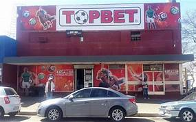

TOPBET
TopBet is a well established and respected South African sports betting brand. Just like most others, it started off with a single betting shop and thanks to its success, today it has no fewer than 18 betting shops throughout the country. These can be found in the provinces of Gauteng, KwaZulu-Natal and Limpopo. TopBet is currently licenced by the Gauteng Gambling Board. In keeping with the modern trend, it’s recently made the move online, launching the TopBet site so that customers don’t have to be at a TopBet betting shop to enjoy the brand’s sports betting experience. The TopBet site is aimed primarily at mobile users although it functions perfectly well on desktop platforms, too.

WHERE TO FIND THIS STORE
Shop no : B145 is next to jumbo electronic devices.